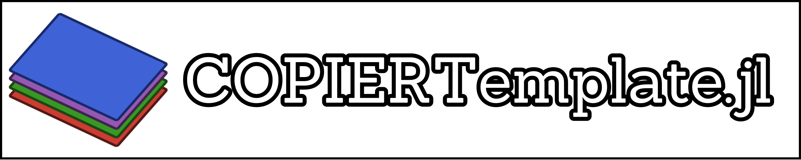

COPIERTemplate - Copier OPInionated Evolving Reusable Template

Welcome to the documentation of COPIERTemplate.jl. This package provides a template in the copier engine for a Julia package. Furthermore, it provides a wrapper around convenience calls to that package.
The main features of this package/template are:
- It provides a curated (opinionated) list of tools and best practices for Julia package development;
- It can be applied and reapplied to existing packages, allowing the updates in the template to be imported into the package;
Using
To fully benefit from the template, there are some steps to be done before and after you generate your package. Check the full guide for more details.
However, if you kinda know what you need to do, this is the TL;DR:
julia> using COPIERTemplate
julia> COPIERTemplate.generate("YourPackage.jl")Or, alternatively, using copier, run
copier copy https://github.com/abelsiqueira/COPIERTemplate.jl YourPackage.jlI really recommend checking the full guide, though.
To understand more about our motivation and what the template provides, check the explanation page.
Getting and providing help
I hope you find this package useful. If you have any questions, requests, or comments, check the issues and discussion pages.
If you would like to get involved in the COPIERTemplate growth, please check our contributing guide. We welcome contributions of many types, including coding, reviewing, creating issues, creating tutorials, interacting with users, etc. Make sure to follow our code of conduct.
If your interest is in developing the package, check the development guide as well.